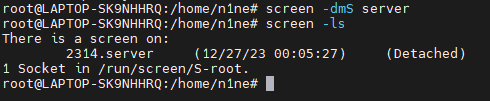
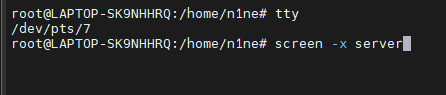
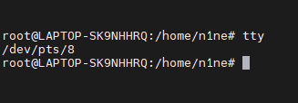
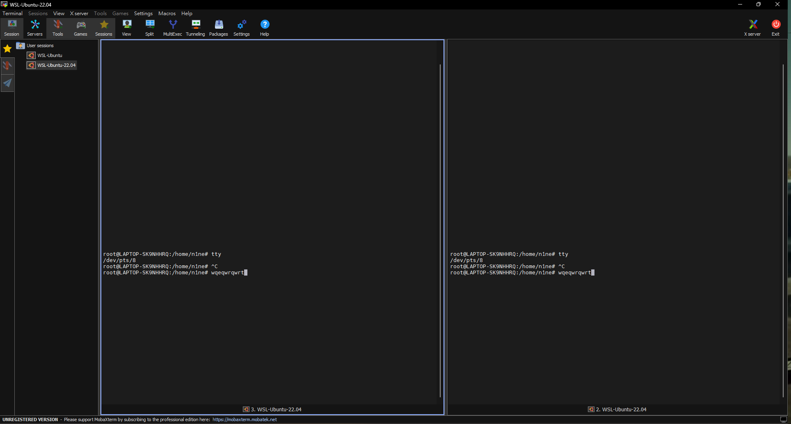

Use screen to sync remote and local console
Date : 2023/12/26
Auth : Guanyan.Wang
Environment : Ubuntu 22.04
why sync console?
I have been working with server for a few month. If we want to use server in the Lab,
we need to use ssh protocol to connect to the server. However, we will make a new
session while ssh into the server. The content will not identical with server.
If we make some test on server, the test content will not send to the local.
So we need to do sync.
How to sync with screen?
First, we need to create a new screen session
you can use -ls argument to list existed session
 screen result
Now, use screen -X server to attach to the session.
note: you can use tty to check current session.
# /dev/pts/7
$ screen -x server screen -x server and tty result
 in screen session
Now, We can open two terminal to see if the screen is sync.
 Two sync screen
As you can see, two terminal are sync, so that, we can easily observe the test content in server.
Preference
Me :)